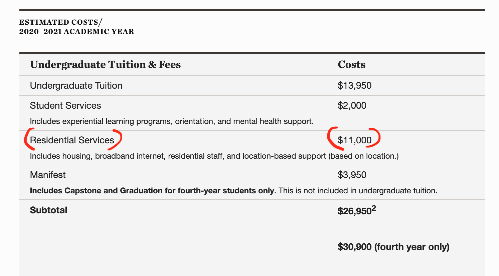
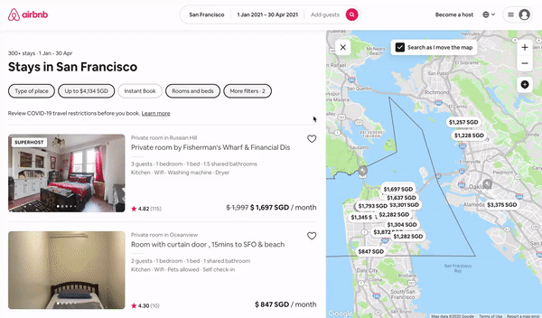

tldr: Strictly from a financial perspective, Minerva housing is worth it for students who receive more than $6,000 in scholarship amount per year. Using Airbnb as a proxy for the availability and cost of independent housing in Minerva rotation cities, the Quest found plenty of housing options cheaper than Minerva, except San Francisco. Reviewing Minerva's policies regarding financial aid and independent housing reveals that opting out to live independently is only financially viable for students who receive less than $6,000 in scholarship amount annually, regardless of the cost of independent housing. These students make up 17 - 22% of Minerva's student body. The less scholarship a student receives, the more they can use independent housing as a means to save housing cost. This analysis neglects other reasons a student might want to stay in Minerva housing. The author makes assumptions in the process of arriving at a dataset that is open to scrutiny, and discusses the potential consequences of more students deciding to opt-out of Minerva housing. Note that this analysis is only applicable in non-pandemic academic years!
An article published last month provided average annual room and board estimates at $11,100 at private four-year colleges in the United States. The article's author did not cite their sources or estimation methodology, so these estimates are to be believed with some reservation. Still, it seems that Minerva's residential service cost of $11,000 is right about the average for a private four-year undergraduate program. However, Minerva's residential service cost pays for much more than just accommodations. According to Minerva's Student Services Director Marianna Panossi, the residential services fee is inclusive of services such as "technology, facilities for outside events, and importantly most on-ground staff who serve the needs of all students, helping them to access local health care/insurance, supporting wellness, assisting with local visas and residential permits, emergencies."

The estimated cost of attending Minerva per academic year in 2020/21. Note the 'residential services' cost of $11,000.
The true cost of housing at Minerva exclusive of other services is derived by subtracting the 'Independent Housing Fees' of $5,000 from the annual residential cost of $11,000 as described on Minerva's official Tuition & Fees page. This amount comes up to $6,000 per academic year or $750 per month, which compares favourably to housing costs at a typical four-year undergraduate program in the United States. Minerva's commitment to "reducing the cost to attend a top-tier university program" is one major factor why students have decided to enroll at Minerva. However, can housing costs at Minerva truly be compared to other American undergraduate programs when Minerva's students only live in the United States for one academic year?
Annual Residential Services - Annual Independent Housing Fee = Annual Just Rent at Minerva
Annual Just Rent at Minerva = $11,000 - $5,000 = $6,000
Monthly Just Rent at Minerva = $6,000 / 8 Months = $750
M21 student Tessa Owens published an article on how she saved money without financial aid in The Quest recently, listing living "in independent housing in Seoul & Buenos Aires" as one of the ways she managed to save money. In those cities, she found housing through Airbnb and saved about $300 each semester, amounting to approximately $75 per month. Minerva charges the same fees for housing in all locations instead of having fees fluctuate each semester based on specific city costs. According to Teri Cannon, Minerva's Chief Policy and Accreditation Officer, this policy was decided such that it would be easier for students and Minerva to anticipate future location-based costs. This policy, however, also opens an avenue for students to viably take advantage of cheaper accommodations rates in certain rotation cities. Owen's experience suggests that Buenos Aires and Seoul are candidate cities where independent housing is generally cheaper compared to Minerva housing. But how much cheaper? What do the housing conditions look like in these accommodations? What about the other cities on the global rotation?
To answer these questions, The Quest scraped Airbnb listings in San Francisco, Seoul, Hyderabad, Berlin, Buenos Aires, London and Taipei. These listings serve as a proxy, albeit an imperfect one, for independent housing options in Minerva rotation cities. Using these listings as a basis of comparison against the cost of Minerva housing, The Quest investigates which cities have cheaper alternative housing accommodations, estimating the quantity and quality of these options. Overall, The Quest scraped a dataset of 1531 Airbnb listings across the seven rotation cities, with the complete methodology described at the bottom of this article open for further examination. Recall that the true cost of rent at Minerva is $750 a month. Curious about how Minerva stacks up against Airbnb alternatives? Scroll down!
Financial Aid Though?
The data suggests that there are housing options available that are much cheaper than Minerva housing in all of the rotation cities aside from San Francisco. From a financial perspective, why do students continue to stay at Minerva housing, and like Owens did in Seoul and Buenos Aires, not choose to opt out to save a few (or many) bucks?
A significant reason is financial aid - specifically scholarships. Around 80% of Minerva students receive some form of financial aid and 50% have financial aid packages of $25,000 per year. If a student on financial aid decides to opt out of Minerva's residential services, they effectively lose the housing portion of the scholarship since only costs for living in Minerva-provided housing are eligible for financial aid. Teri Cannon stated to The Quest that this policy is guided by Minerva's belief that "students who choose to live outside Minerva housing are not having the full Minerva community experience... and on principle Minerva is not obligated to subsidise this choice with financial aid."
The table below illustrates a decision table of the per semester housing cost owed to Minerva if a student decides to opt-in or out-out of Minerva housing depending on their scholarship situation, and the potential rent that a student would then use to pay for independent housing.
| Annual Scholarship Amount |
$20,000 |
$10,000 |
$6,000 |
$0 |
|
| $0 |
$1,000 |
$5,000 |
$11,000 |
| $5,000 |
$5,000 |
$5,000 |
$5,000 |
|
| -$5,000 |
-$4,000 |
$0 |
$6,000 |
Table detailing the housing cost owed to Minerva depending on a student's financial aid level and their decision to opt-in or out of Minerva housing. Note that negative values signify that it is impossible to save any money if a student chooses to opt out.
The Quest used the following equation below to arrive at the numbers above. In order to determine how much potential money a student could save by opting out of Minerva housing, the two unknown variables that affect their decision are their scholarship amount and the rent cost of independent housing. To illustrate the calculations used to arrive at these numbers, two examples with different scholarship amounts and independent rent prices are demonstrated further below.
Residential Services Fee - Independent Housing Fee - Scholarship Amount
=
Independent Housing Rent + Potential Money Saved
recieves no scholarship
If a student receives no scholarship and manages to snag an independent housing arrangement costing them $250 per month or $2,000 per annum, which seems to be possible in cities such as Buenos Aires, Hyderabad, Seoul and Taipei, then they would save $4,000 for that semester on housing cost; illustrating how it is entirely viable for students without scholarship to live independently and save housing costs. Note that the numbers reflect annual costs.
$11,000 - $5,000 - $0 = $2,000 + Potential Money Saved
Potential Money Saved = $4,000
$10,000 scholarship per annum
On the other hand, if a student receives $10,000 in scholarship per annum, then they would only break even if the property owner of their independent housing somehow gives the student $500 per month or $4,000 over the course of the year for renting their property. This unrealistic prospect depicts how it is impossible for students receiving scholarship to live independently under the current policies that govern financial aid and housing.
$11,000 - $10,000 - $10,000 = -$4,000 + Potential Money Saved
Potential Money Saved = $0,
but only with negative rent of $4,000?
Hold Up. Way Too Much Math.
If the calculations above are confusing, the following visualisation which utilises the scraped Airbnb dataset might be useful. Scrolling varies the scholarship amount a hypothetical student receives. Notice how it is impossible for a student who receives scholarships of more than $6,000 a year or $3,000 a semester to live in any of the independent housing options, even those that cost less than $100 per month, because giving up their scholarship just isn't worth it. As the scholarship amount reduces, a student is increasingly incentivised to opt-out as there are more listings that the student could live in and potentially save money. Niko Pelka, Minerva's Chief Finance Officer, estimates that the portion of students who receive less than $6,000 in scholarship amount per year was about 17 - 22% of Minerva's student body in April 2020.
Note that this data viz only depicts the situation of a student deciding between Minerva housing and independent housing within the global rotation, the calculations involving remote study scenarios differ. Another related tangent is that a student who chooses to live independently at no cost. For instance, if a student stays at a relative's place for free, their financial aid package is decreased to reflect the student's decreased expenditure.
Conclusions & Context
To recap, this investigation concludes that Minerva housing is worth it for students who receive more than $6,000 in scholarship amount per year, and becomes increasingly less worth it as students receive less in scholarship. This 'worth-it-ness' was empirically proven by comparing the cost of Minerva housing versus the alternative housing options available as Airbnb listings in Minerva rotation cities.
However, the author must reiterate that this conclusion is purely drawn from a financial perspective. There are plenty of reasons why a student might want to stay in Minerva housing, even if they are paying slightly more than the market rate:
- Being immersed in the residential Minerva community and being physically close to classmates who reside in the residence hall.
- Having immediate access to Minerva residential staff and their offices, which are usually located within or nearby Minerva residential halls. This reason is particularly important in cases where a student encounters medical and other such emergencies.
- Not having to worry about arranging housing independently, especially in rotation cities where the student does not speak the local language.
- Not having to stress about dealing with potentially shifty or troublesome Airbnb hosts, who may give tenants a difficult time or charge additional costs unreasonably.
Minerva's Response
The Quest presented the findings of this analysis to Minerva senior staff. When asked about the potential consequences of an exodus of students choosing to opt-out of Minerva housing, these are responses of Teri and Niko:
- Niko and Teri reiterated the many advantages of staying at Minerva housing as described above, stating that Minerva's residence halls are specifically designed for Minerva students. Teri listed the example of Minerva spending 'thousands of dollars on high speed internet in the residence halls' to make sure students can take classes properly, in addition to providing the statistic that in the last fiscal year, Minerva spent approximately $6.75 million or about $10,800 per student - $300 more than Minerva charged per student for city operations.
- Nico stated that he is not worried that students would leave Minerva housing en masse, believing that the residence halls offer competitive prices and living conditions. Even if lots of students do decide to opt-out, these students are only a minority of the population, and Minerva also has the flexibility to adjust financially, since Minerva has multi-year tenants in only two rotation cities excluding San Francisco. Even then, if Minerva has additional financial difficulties in housing expenditures, Minerva has the ability to alter housing and financial aid policies such as restricting independent housing or increasing the residential service fees. The Quest notes that increases in housing costs would disproportionately affect lower-income students, especially since this analysis concludes that students without scholarship can find cheaper alternatives elsewhere.
- Teri stressed that the absence of more students from the residence hall will negatively affect the student experience that Minerva has worked hard to construct, which is predicated on students interacting in a common residential space. The Quest highlights a potential experiential divide between students who receive financial aid and students who do not if increasing numbers of non-scholarship students leave the residence halls.
- Lastly, Niko and Teri confirmed that Minerva's residential program is integral to Minerva's legal status as an U.S undergraduate program. Minerva's leadership is concerned about recently increased risk of regulatory enforcement by the U.S Department of Homeland Security. The absence of students from Minerva housing might jeopardise Minerva's legal status as an U.S educational institution or students' F1 visa status. On the related topic of getting Minerva students visas to the rotation city countries, Niko and Teri pointed out that city officials and Minerva's partner institutes have expressed a preference for Minervans to remain in the same residence.
Methodology

This GIF shows the search parameters used by The Quest to scrape Airbnb.
The Quest scraped Airbnb listings in San Francisco, Seoul, Hyderabad, Berlin, Buenos Aires, London, and Taipei on the 4th of October, 2020. The code used for scraping and the scraped datasets are available here. The author made several assumptions for the purposes of arriving at the data that informs this investigation. One major assumption is ignoring the effect of the pandemic on Airbnb prices, since this effect is difficult to quantify or control for. Another assumption would be the debatable premise that Airbnb is a reliable proxy for alternative housing options.Furthermore, this analysis assumes a student’s cost of living remains the same regardless of their choice of housing. For instance, a student living independently might need to pay for cleaning products or higher transportation costs to Minerva events, thus bearing additional costs for living independently. Finally, it should be noted that even though this analysis viewed the quality of Minerva housing uniformly across rotation cities, the quality of the residence halls and the services provided in each rotation city vary significantly. The other assumptions made are implicit in the search parameters used on Airbnb. These assumptions and their accompanying justifications are as follows:
- The listing was available between Jan 1st - April 30th 2021.
- This date range simulates a potential student looking for independent housing over an entire semester time frame.
- The listing cost below $3000 USD per month.
- The Quest assumes that students probably aren't going to spend onwards of $3000 on rent per person. This assumption has the additional benefit of weeding out luxury listings that skew the data to be more expensive.
- The listing is equipped with wifi and a kitchen space.
- Self-explanatory? The Quest also assumes that students would like to have internet and food security in their residency at the bare minimum.
- The listing has at least one bed.
- The Quest assumes that students would rather not sleep on a couch the entire semester. Additionally, the listing price is divided by the number of beds in the listing to find the price per person of that listing, since a potential group of students could share a flat and split the costs.
- Searched the entire city without setting neighbourhood/geographic limitations
- The Quest neglected to use neighbourhood search parameters since previous and future cohorts of Minerva students have stayed in different neighbourhoods in the same city. An outcome of this assumption is that there are listings recorded in the data such as those in Berkeley and Emeryville, that are further from the city than intended. However, this concern is balanced by how students determined to save cost might decide to stay in these outlying areas.